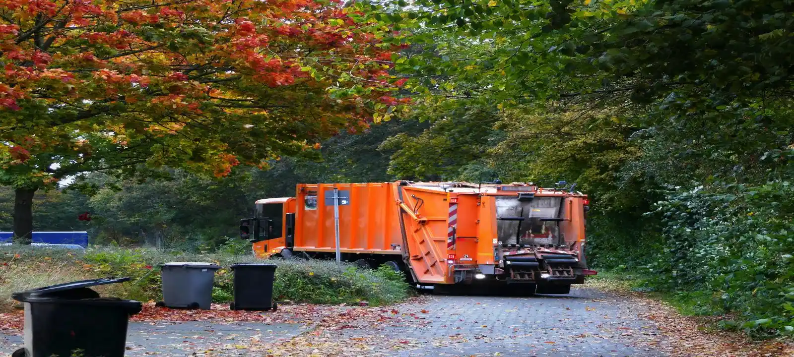
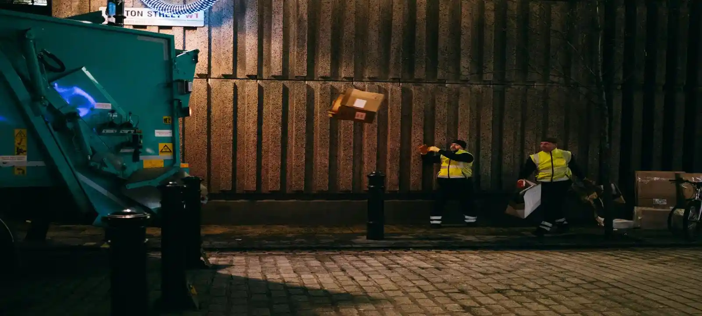

What Is Rubbish Removal In Wollongong NSW?
Rubbish removal in Wollongong NSW is a fully managed waste removal service where all lifting, loading, and disposal is handled for you. Unlike skip bin hire, where you are responsible for filling the bin yourself, this service is designed for customers who want a faster and more convenient solution. It is commonly used for house cleanouts, end-of-lease cleaning, estate clearance, and situations where waste needs to be removed without physical effort.
When You Need Rubbish Removal In Wollongong Area
Rubbish removal in the Wollongong area is commonly needed when waste has already built up and needs immediate clearing. This includes urgent cleanups, moving house, deceased estate clearances, renovation projects, and situations where there is limited time, space, or physical ability to manage waste. Many customers choose rubbish removal service in Wollongong when they want a quick, done-for-you solution instead of handling disposal themselves.
Cheap Rubbish Removal In Wollongong
Cheap rubbish removal in Wollongong depends on waste volume, access conditions, labour required, and the type of materials being removed. Smaller jobs with easy access are usually more affordable, while heavier items or difficult locations may increase cost. In many cases, rubbish removal can be more cost-effective than skip bin hire in Wollongong when the job requires fast clearing without long loading time or multiple trips.
Rubbish Removal Wollongong Prices
Rubbish removal prices in Wollongong are determined by waste volume, labour time, access difficulty, and disposal requirements. Because every job is different, pricing is assessed individually rather than using fixed rates. This ensures customers only pay for the actual work required, making rubbish removal in Wollongong NSW flexible, fair, and suited to both small and large cleanups.
Rubbish Removal Vs Skip Bin Hire
Rubbish removal service in Wollongong is ideal when you want everything handled for you, including lifting and loading, while skip bin hire is better for ongoing projects where waste builds up over time. In the Wollongong area, many customers choose rubbish removal for urgent or one-off cleanups, while using skip bins for longer renovation or construction work. We help customers choose the most suitable option based on timing, effort, and waste volume.
Areas We Service
We provide rubbish removal services across Wollongong and surrounding Illawarra suburbs including Wollongong CBD, Dapto, Figtree, Corrimal, Warrawong, Shellharbour, Kiama, Unanderra, Fairy Meadow, Woonona, and nearby areas. Our rubbish removal service covers both residential and commercial locations across the full Wollongong area.

Frequently Asked Questions
Is rubbish removal cheaper than skip bin hire in Wollongong?
It depends on the job size and waste type. For small or urgent cleanups, rubbish removal can be more cost-effective because it reduces labour and time. For larger ongoing projects, skip bins are often more suitable.
How fast can rubbish removal be done in Wollongong?
In many cases, rubbish removal can be arranged on the same day or next day depending on availability and location within the Wollongong area.
What type of waste can be removed?
Most household, garden, renovation, and light construction waste can be removed. Hazardous materials such as chemicals or asbestos require special handling and are not included in standard removal services.